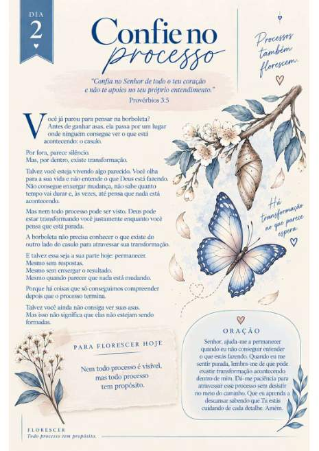
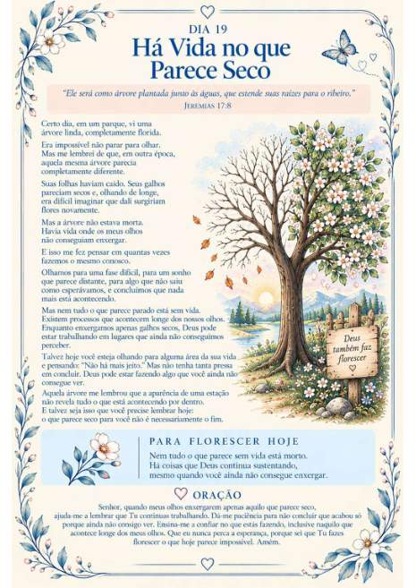

Parte 1
Onde Tudo Começa
Toda jornada começa com uma semente.
Uma jornada para mulheres que desejam crescer, recomeçar e florescer em Deus — mesmo em meio aos processos, desafios, esperas e recomeços.

Há fases em que a vida parece silenciosa. Momentos em que esperamos, recomeçamos e nem sempre conseguimos enxergar o que Deus está fazendo.
O Florescer foi criado para acompanhar você nesse caminho, com reflexões bíblicas, mensagens de fé e momentos de oração ao longo de 30 dias.
Ao longo das páginas, o devocional conduz você por cinco temas que se conectam em uma jornada de fé e amadurecimento.
Toda jornada começa com uma semente.
Antes de descobrir quem você é, descubra a quem pertence.
Tempestades também revelam o quanto você confia.

Cada estação tem um propósito e em todas elas Deus continua cuidando de você.
Quando você permite o processo, Deus transforma a sua história em flores.
Um momento reservado para desacelerar, refletir na Palavra e fortalecer sua caminhada com Deus.
Mensagens para meditar e aproximar o coração de Deus.
Uma aplicação prática para levar a reflexão à vida cotidiana.
Palavras para acompanhar seu momento de entrega e fé.
Uma seleção musical para acompanhar as estações da jornada.
Reserve um tempo para sua fé, sua caminhada e seu relacionamento com Deus. Comece hoje os 30 dias do Florescer.
Um material digital para acompanhar você onde estiver.
Após a compra, as instruções de acesso serão enviadas para seu e-mail.
Algumas informações para você comprar com tranquilidade.
Não. O Florescer é um devocional digital. As instruções de acesso são enviadas ao e-mail informado na compra pela Hotmart.
O conteúdo foi organizado como uma jornada devocional de 30 dias. Você pode acompanhar um dia de cada vez, no seu ritmo.
Após a confirmação da compra, a Hotmart envia as instruções de acesso para o e-mail cadastrado no pedido.
A oferta informa garantia de 7 dias. Consulte as condições e orientações apresentadas no checkout da Hotmart.
Clique em qualquer botão “Quero meu Florescer” ou “Quero começar minha jornada”. Você será direcionada ao checkout oficial da Hotmart.
Talvez você esteja em uma estação de espera, de recomeço ou de crescimento. Que estes 30 dias sejam um convite para confiar no cuidado de Deus em cada etapa.
Começar minha jornada por R$ 29,90 ↗